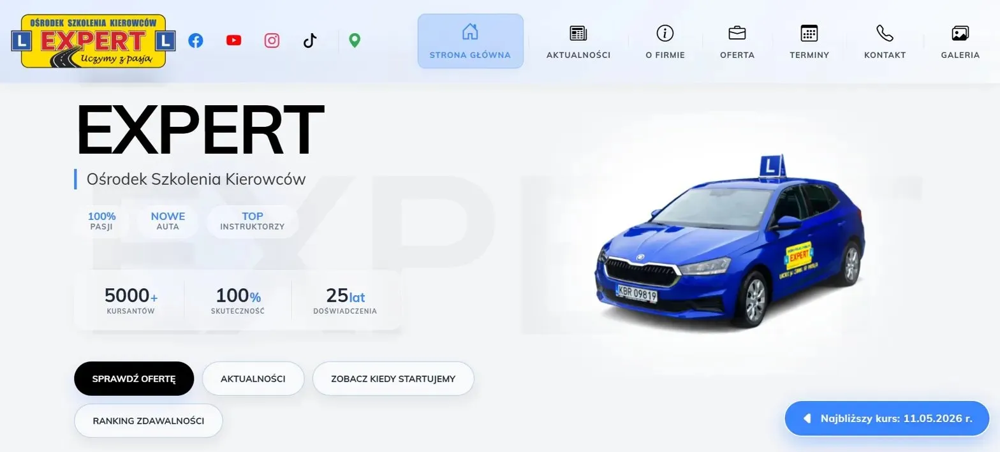
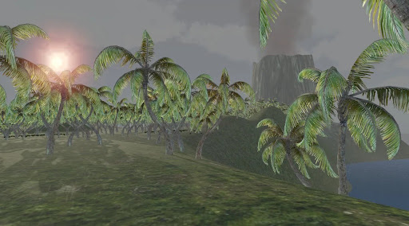
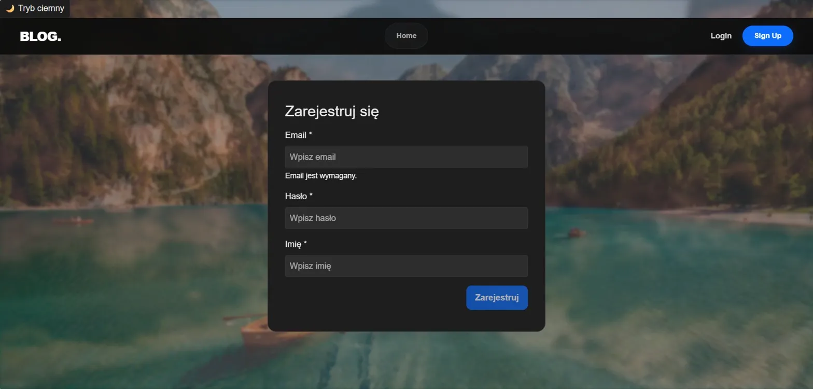

Projekty
Aplikacje webowe, mobilne, gry i narzędzia backendowe — tu trafia wszystko co zbudowałem.

OSK Expert
Strona internetowa dla ośrodka szkolenia kierowców — freelance. Panel admina do zarządzania kursami, aktualnościami i statystykami odwiedzin. Projekt live.

Racing 3D
Autorski silnik wyścigowy napisany od zera w C++ i OpenGL 3.3 — bez Unity ani Unreal. Pełna fizyka, AI na waypointach, shadery Phonga i system ekonomii z garażem 7 samochodów.

Wyspa Mystery
Survivalowa gra FPS z systemem zagadek logicznych. Eksploruj niebezpieczną wyspę, unikaj wilka i zapal ognisko pomocy przed zapadnięciem zmroku.

Blog App
Fullstackowa aplikacja blogowa — Angular + Node.js. System postów, komentarzy, ocen i ulubionych. Panel admina, autoryzacja JWT i Server-Side Rendering.

UAlingo
Aplikacja mobilna Android do nauki języka ukraińskiego — quizy z timerem, gra Word Search, memy edukacyjne i autoryzacja Firebase. 18 ekranów, 10 tematów, 120 pytań.